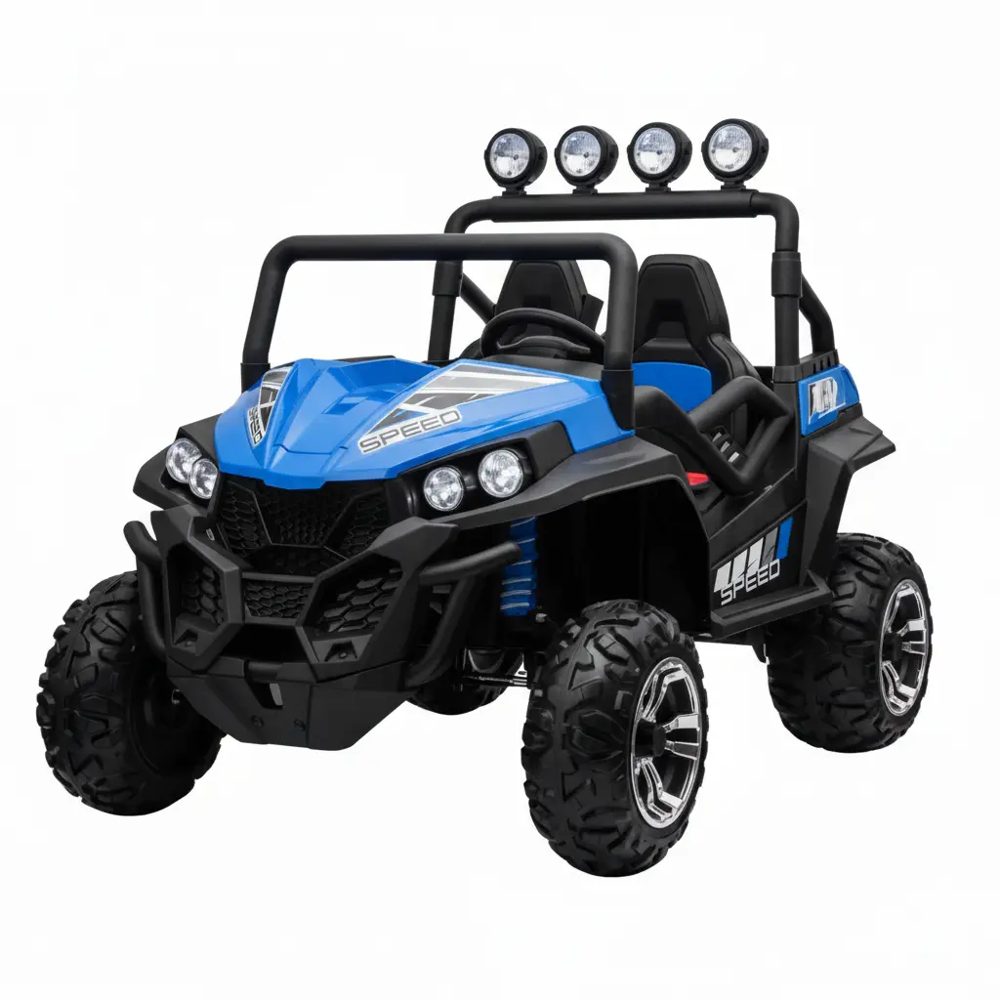

12V & 24V Ride-On Jeeps – Carzone Toys
Kids love anything with wheels. Give them a toy car and suddenly your living room turns into a racetrack. But when it comes to something that feels real, nothing comes close to ride-on jeeps. These mini versions of real jeeps are more than just toys. They are built to give children a taste of independence, a thrill of driving, and hours of outdoor fun.
So what’s the difference between a 12V and a 24V ride-on jeep? The answer is actually simple. A 12V ride-on jeep is best for younger kids who are just starting out and need a safe, steady speed. A 24V ride-on jeep, on the other hand, is made for older kids who want more power, more speed, and the ability to handle rougher ground. Both versions give children the joy of driving, but one is like a calm Sunday ride while the other feels like a fun mini off-road trip.
At Carzone Toys, the collection of 12V & 24V Ride-On Jeeps is designed with parents in mind too. Safety, durability, and style all come together. Each model looks cool enough to make kids proud and safe enough to make parents relaxed. That’s why these jeeps have become some of the most loved toys in families across the world.
Why Choose a Ride-On Jeep for Your Child?
Kids today are surrounded by gadgets. Screens are everywhere, from phones to tablets to laptops. While digital games have their place, nothing beats the charm of outdoor play. A ride-on jeep encourages children to go outside, get some fresh air, and feel the ground under their wheels. Parents often say their kids forget about cartoons the moment they sit in one of these jeeps.
The best part is that these jeeps are not just for fun. They also build confidence. When a child sits behind the wheel and presses the pedal, they feel in control. It’s a safe introduction to the idea of driving. They learn how to steer, how to move forward, and how to stop. Some parents even notice that kids become more responsible because they start taking care of their jeep as if it’s their own car.
Carzone Toys has made sure that their jeeps look like the real thing. From headlights to grills, from wheels to seats, everything is designed to mimic real jeeps. Kids notice these details. They love when neighbors stop to admire their toy vehicle, and honestly, parents secretly enjoy the compliments too.
And let’s be honest: it’s not just the kids who enjoy it. Parents often end up walking alongside with a proud smile, sometimes even wishing these jeeps came in adult sizes. Who wouldn’t want to cruise around the block in one of these?
The Difference Between 12V and 24V Ride-On Jeeps
When parents first shop for a ride-on jeep, they usually get confused between 12V and 24V models. Both sound good, but the choice depends on your child’s age, weight, and the kind of play area you have.
A 12V jeep usually runs at a moderate speed. It’s smooth, steady, and perfect for younger children between 3 to 6 years old. It works best on flat surfaces like driveways, sidewalks, and parks. Parents often prefer this version because it’s safe and doesn’t feel too fast. Think of it as the training wheels stage of driving fun.
A 24V jeep, on the other hand, is stronger. With higher voltage, it delivers more speed and can handle uneven surfaces like grass, gravel, and gentle slopes. It’s a great choice for kids who are 6 years and older, or for younger kids who are ready for more thrill. The extra power makes it feel more realistic, almost like a mini version of an off-road vehicle. Kids who love challenges will enjoy this one.
Both versions come with safety features such as parental remote controls, seat belts, and speed settings. So even when the kids feel like little racers, parents have the peace of mind that they can step in if needed. That balance between fun and safety is what makes Carzone Toys stand out.
Features That Make Carzone Toys Ride-On Jeeps Special
Every parent looks at more than just the design when buying toys. They want safety, durability, and something that will keep their child engaged. Carzone Toys checks all those boxes.
The ride-on jeeps come with sturdy construction. The wheels are strong enough to handle daily rides, and the seats are comfortable so kids don’t complain after five minutes. Many models also come with working headlights and built-in music systems. Yes, you read that right. Kids can actually play their favorite tunes while driving. Imagine your five-year-old cruising down the sidewalk listening to their favorite nursery rhyme. That’s entertainment on wheels.
Another feature parents love is the remote control option. Younger kids might not always steer properly, and that’s where parents step in. With a remote, you can control the jeep until your child gets the hang of it. It feels like a video game for parents, except the car is real, and your child is the happy driver.
The battery life is also impressive. Depending on the model, these jeeps can run long enough to give kids proper playtime before needing a recharge. Charging is simple, and replacements are easy to find. Carzone Toys makes sure you don’t face any headaches when it comes to maintenance.
Design-wise, these jeeps look sharp. They come in different colors and styles, so whether your child likes bold red, cool black, or bright yellow, there’s something that fits their taste. And yes, they are stylish enough to make the neighbors jealous.
Safety First – Always
Parents sometimes worry about giving kids ride-on vehicles. The thought of speed and wheels can sound risky. But Carzone Toys has made safety the top priority. Each jeep is equipped with seat belts to keep kids secure. The speed is adjustable, so parents can limit it until the child is ready for more.
The parental remote control is another great safety measure. Imagine your child heading too close to a corner or bump. With the remote, you can redirect or stop the jeep instantly. It’s like having invisible hands guiding the ride.
Even the body of these jeeps is designed with safety in mind. The edges are smooth, the seats are steady, and the wheels are made to provide grip. These details may not sound glamorous, but they matter a lot when you’re trusting a toy with your child’s safety.
Outdoor Playtime That Never Gets Old
Kids today often spend too much time indoors. Parents sometimes feel guilty about screen time, but it’s hard to find toys that keep children entertained outside. This is where ride-on jeeps shine. They make outdoor play irresistible. Once a child experiences the joy of riding around, they rarely want to go back inside.
The good thing is that these jeeps are versatile. A 12V model works perfectly in small spaces like driveways or patios, while a 24V model can handle bigger yards, parks, or open fields. It doesn’t matter where you live; there’s always a way to enjoy them.
And the fun isn’t just for kids. Parents often enjoy walking behind, recording videos, and sharing proud moments on social media. It’s one of those toys that brings the whole family together. Instead of just sitting indoors, everyone ends up outside enjoying the moment.
Why Carzone Toys is the Best Place to Buy
When it comes to buying ride-on jeeps, parents want trust. They want to know they’re buying from a company that cares about quality. Carzone Toys has built that reputation by offering products that last.
Every jeep in their collection is carefully selected. They are stylish, safe, and packed with features that make both kids and parents happy. Carzone Toys doesn’t just sell toys; they sell experiences that children remember for years.
Their customer service is another reason families keep coming back. If you ever face an issue, the team is there to help. That kind of support makes the buying process stress-free. Parents know they’re not just buying a toy; they’re investing in happy childhood memories.
Do you know about Electric Dirt Bikes?
People are tired of filling up gas tanks and paying crazy fuel prices. Electric dirt bikes are the answer, and Carzone’s collection shows exactly why. They’re easy to charge, kind to the environment, and way less noisy. That means you can ride through the neighborhood without scaring dogs, waking babies, or making grandpa yell from the porch.
Final Thoughts
A 12V or 24V ride-on jeep is more than just a toy. It’s a ticket to fun, learning, and outdoor play. The difference between the two comes down to age, speed, and power, but both are packed with joy. Carzone Toys has turned these jeeps into must-have childhood treasures that combine safety, style, and excitement.
Kids get to feel like drivers, parents get peace of mind, and families get memories that last a lifetime. If you’re thinking about giving your child a gift they will never forget, a ride-on jeep from Carzone Toys is always the right choice.